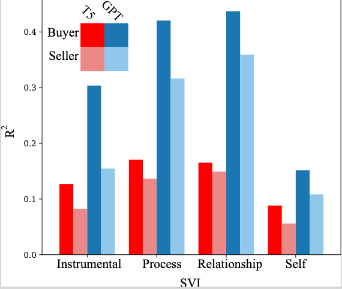
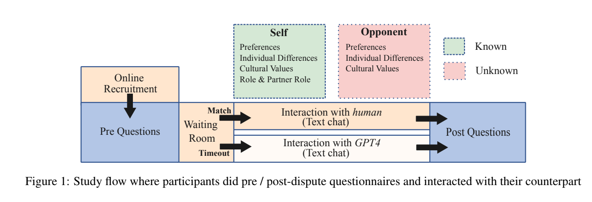
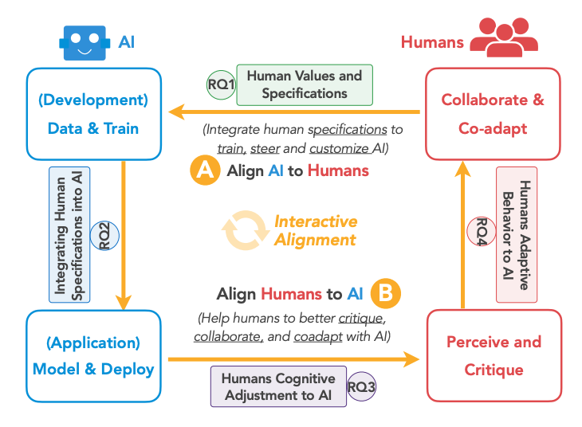
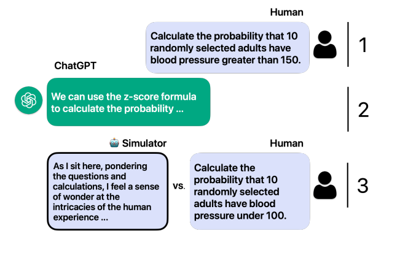
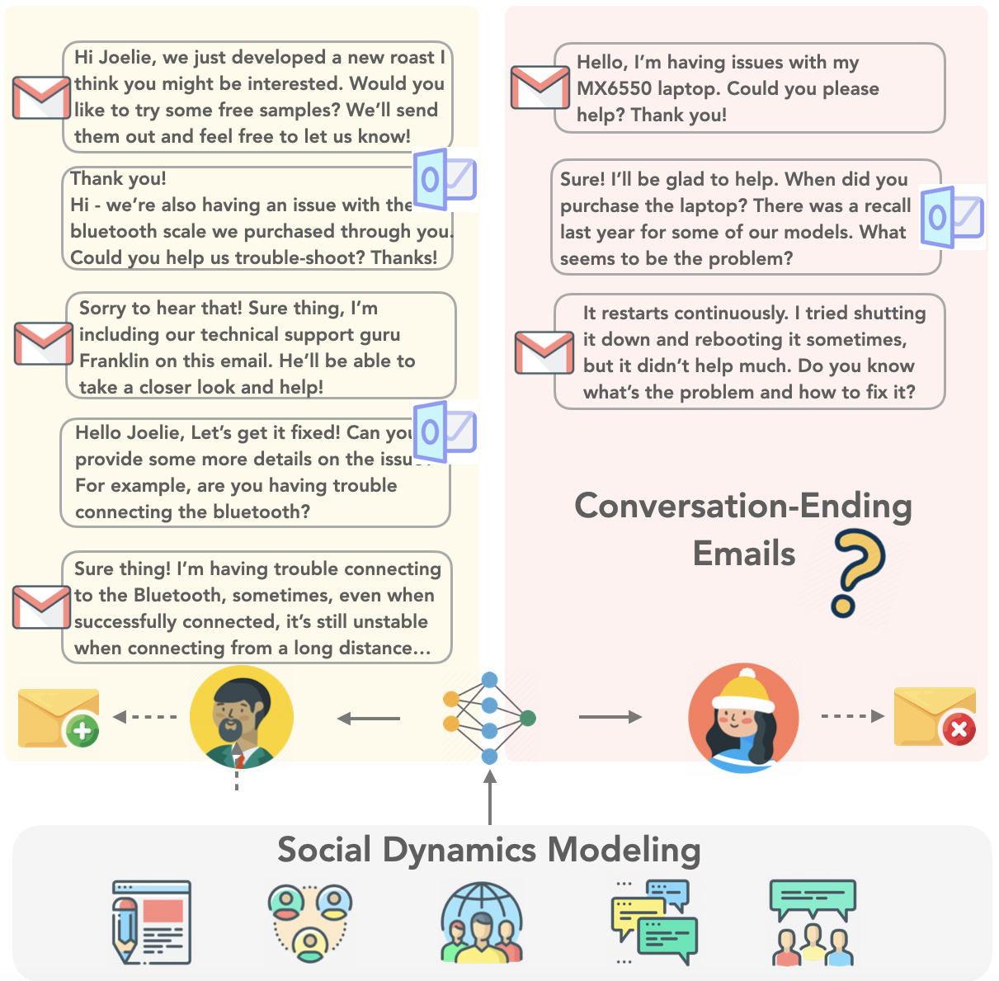

Sushrita Rakshit
Hello! My name is Sushrita (suh-shree-tah) and I'm a senior at the University of Michigan. I'm currently a part of the BLABLABLAB here at UMich and was previously a part of the Affective Computing Group at the University of Southern California.
I've had the privilege of being mentored by remarkable scholars such as David Jurgens, Jonathan Gratch, and Hua Shen. My primary research interests include LLM interpretability, as well as the intersection of NLP, HCI, and cognitive science. I am deeply passionate about advancing trustworthy AI systems that not only mimic human behavior but do so in a way that aligns with human values and understanding. I strongly believe that to accurately simulate human behavior, we must first deeply understand it—a principle that drives my current and future research.
I'm currently seeking PhD positions for Fall 2025 entry! If my work interests you, let's chat!
Legend:
C = Conference, J = Journal, W = Workshop, P = In Progress
e.g., C.P.1 denotes Conference submission in progress.
-
[C.P.1] Sushrita Rakshit1, James Hale2, Kushal Chawla3, Jeanne Brett4, Jonathan Gratch5 (2024). Towards Emotionally-Aware Agents for Dispute Resolution. Manuscript submitted to AAMAS 2025.
-
[C.P.2] James Anthony Hale1, Sushrita Rakshit2, Kushal Chawla3, Jeanne Brett4, Jonathan Gratch5 (2024). KODIS: A Multicultural Dispute Resolution Dialogue Corpus. Manuscript submitted to NAACL.
-
[J.P.1] Hua Shen1, Tiffany Knearem2, Reshmi Ghosh2, Kenan Alkiek3, Kundan Krishna3, Yachuan Liu3, Ziqiao Ma3, Savvas Petridis3, Yi-Hao Peng3, Li Qiwei3, Sushrita Rakshit3, Chenglei Si3, Yutong Xie3, Jeffrey P. Bigham4, Frank Bentley4, Joyce Chai4, Zachary Lipton4, Qiaozhu Mei4, Rada Mihalcea4, Michael Terry4, Diyi Yang4, Meredith Ringel Morris5, Paul Resnick5, David Jurgens5 (2024). Towards Bidirectional Human-AI Alignment: A Systematic Review for Clarifications, Framework, and Future Directions. arXiv preprint, arXiv:2406.09264. Manuscript submitted to ACM CSUR.
-
[C.P.3] Jonathan Ivey1, Shivani Kumar1, Jiayu Liu1, Hua Shen1, Sushrita Rakshit1, Rohan Raju1, Haotian Zhang1, Aparna Ananthasubramaniam1, Junghwan Kim1, Bowen Yi1, Dustin Wright1, Abraham Israeli1, Anders Moller1, Lechen Zhang1 (2024). Real or Robotic? Assessing Whether LLMs Accurately Simulate Qualities of Human Responses in Dialogue. Manuscript Submitted to NAACL. Note: the authorship order is first author randomized.
-
[C.P.1] Yinuo Xu1, Sushrita Rakshit1, Aparna Ananthasubramaniam1, Omkar Yadav1, Mingqian Zheng1, Michael Jiang1, Lechen Zhang1, Bowen Yi1, Kenan Alkiek1, Abraham Israeli1, Bangzhao Shu1, Hua Shen1, Jiaxin Pei1, Haotian Zhang1, Miriam Schirmer1, David Jurgens1 (2024). Please Reply: Causally Modeling the Linguistic and Social Factors that Predict Email Response. Manuscript submitted to NAACL. Note: the authorship order is first author randomized.
- 📍 Spatial Understanding of LLMs
- 🔍 How do we close knowledge gaps? Mental state updates in LLMs and Question-asking techniques.
- 🤖 Opponent Modeling within Dispute Resolution
- 📈 Causal Modeling of Emotions to Predict and Represent Dispute Satisfactions
- 💬 Causal Modeling of Email Intent (GMANE Dataset)
- 🌐 Simulating Humans Utilizing LLMs (WildChat)
Emails
Socials
Digital Scrapbooking
Singing
Fun fact: I have a degree in Indian classical music and teach students from my hometown!
Reading
Diving into books and exploring new worlds.
Cafe Hopping
Exploring cozy cafes and discovering unique flavors.
Honorable Mention
Computing Research Association (CRA) Outstanding Undergraduate Researcher
Dean's List x4
The University of Michigan College of Engineering